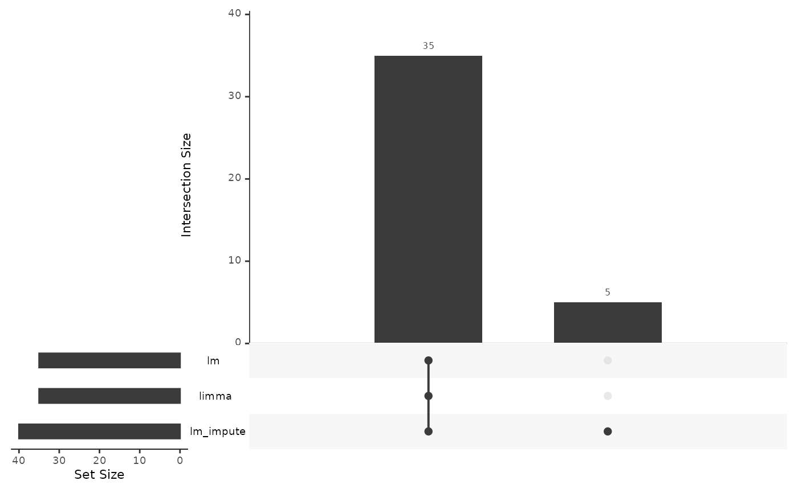

Compare the contrasts of several methods on their subject and contrast pairs
Source:R/ContrastsComparison.R
ContrastsComparison.RdAligns the contrast results of several methods, e.g. facades of build_contrast_analysis() or ContrastsTables
holding another tool's results, on the subject (e.g. protein) and the contrast, and reports which pairs each method
estimates and where their inferences contradict each other. The columns of each result are read through its
ContrastConfiguration, so tables with other column names can be compared too.
The status of a pair in a method is not estimated (no row or no effect), not tested (an effect but no FDR),
not significant, or up / down (FDR below fdr_threshold, by the sign of the effect).
See also
Other modelling:
AnovaExtractor,
Contrasts,
ContrastsDEqMSFacade,
ContrastsDEqMSVoomFacade,
ContrastsFacadeBase,
ContrastsFirth,
ContrastsFirthFacade,
ContrastsHurdleFacade,
ContrastsHurdleNestedFacade,
ContrastsLMFacade,
ContrastsLMImputeFacade,
ContrastsLimma,
ContrastsLimmaFacade,
ContrastsLimmaImputeFacade,
ContrastsLimmaVoomFacade,
ContrastsLimmaVoomImputeFacade,
ContrastsLimpaFacade,
ContrastsLimpaNestedFacade,
ContrastsLmerNestedFacade,
ContrastsModerated,
ContrastsModeratedDEqMS,
ContrastsPlotter,
ContrastsRLMFacade,
ContrastsROPECA,
ContrastsROPECAImputeNestedFacade,
ContrastsROPECANestedFacade,
ContrastsROPECAV2,
ContrastsROPECAV2ImputeNestedFacade,
ContrastsROPECAV2NestedFacade,
ContrastsRfitFacade,
ContrastsRfitImputeFacade,
ContrastsTable,
INTERNAL_FUNCTIONS_BY_FAMILY,
Model,
ModelFirth,
ModelLimma,
StrategyLM,
StrategyLimma,
StrategyLimpa,
StrategyLmer,
StrategyLogistf,
StrategyRLM,
StrategyRfit,
build_contrast_analysis(),
build_model(),
build_model_glm_protein(),
build_model_impute(),
build_model_limma(),
build_model_limma_impute(),
build_model_limma_voom(),
build_model_limma_voom_impute(),
build_model_limpa(),
compute_borrowed_variance(),
compute_borrowed_variance_limma(),
df.residual.rfit_prolfqua(),
group_label(),
impute_from_model(),
impute_refit_singular(),
list_facades(),
lookup_facade(),
lr_test(),
merge_contrasts_results(),
new_imputed_model(),
nobs.rfit_prolfqua(),
pivot_model_contrasts_to_wide(),
prolfqua_analysis_methods,
register_facade(),
sigma.rfit_prolfqua(),
strategy_limma(),
strategy_limpa(),
strategy_logistf(),
vcov.rfit_prolfqua()
Public fields
subject_idcolumns identifying the subjects, shared by all methods
fdr_thresholdFDR below which a contrast is significant
Methods
ContrastsComparison$new()
align the contrast results of the methods
Usage
ContrastsComparison$new(contrasts, fdr_threshold = 0.05)Arguments
contrastsnamed list of contrast objects (facades, ContrastsInterface objects, ContrastsTables); the names label the methods
fdr_thresholdFDR below which a contrast is significant
ContrastsComparison$aligned()
one row per subject, contrast and method over all pairs any method reports: effect, statistic, p.value,
FDR, estimate_type (NA for tables without it) and status
ContrastsComparison$pairs()
the pairs of one method with all the given columns defined, e.g. c("effect", "p.value") for the pairs with a
fold change and a p-value
ContrastsComparison$coverage()
number of pairs per set of methods that estimate them (none: reported, but without an effect)
ContrastsComparison$conflicts()
per pair, the number of methods by status, and where the methods contradict each other:
sign_conflict (up in one method, down in another), significance_conflict (significant in one, tested but
not significant in another), coverage_conflict (significant in one, not estimated by another)
ContrastsComparison$upset()
UpSet plot of the pairs each method estimates
Returns
the plot of UpSetR::upset()
Examples
sim <- sim_lfq_data_protein_config(n_proteins = 20, weight_missing = 0.5, seed = 3)
#> `protein_Id`: columns `proteinID`, `idtype2` united with separator '~'.
#> creating sampleName from file_name column
#> setup_analysis: dropped 5 unconfigured columns: average_prot_abundance, sd, mean, N, Replicate.
#> setup_analysis: added 62 rows with NA response for feature and sample combinations absent from the input.
lfqdata <- LFQData$new(sim$data, sim$config)
contrasts <- c(A_vs_Ctrl = "group_A - group_Ctrl", B_vs_Ctrl = "group_B - group_Ctrl")
methods <- c("lm", "limma", "lm_impute")
fits <- lapply(stats::setNames(methods, methods), function(method) {
build_contrast_analysis(lfqdata, "~ group_", contrasts, method = method)
})
#> fit (Model): 62 missing responses dropped (e.g. 0GRprF~7339, 4JK499~3111, 7IZdVV~6818, AZPG26~9461, AoNKbb~3497, ...): NA response (missing observation) left out of the fit
#> See $provenance().
#> fit (limma): 3 singular fits (e.g. 4JK499~3111, CibL2O~2149, EnbuYk~7811): coefficients not estimable (Partial NA coefficients)
#> fit (limma): 62 missing responses dropped (e.g. 0GRprF~7339, 4JK499~3111, 7IZdVV~6818, AZPG26~9461, AoNKbb~3497, ...): NA response (missing observation) left out of the fit
#> See $provenance().
#> fit (ModelImputed): 3 refit at the limit of detection (e.g. 4JK499~3111, CibL2O~2149, EnbuYk~7811): fit failed, singular or missing a group; missing responses imputed at the LOD
#> fit (ModelImputed): 39 missing responses dropped (e.g. 0GRprF~7339, 7IZdVV~6818, AZPG26~9461, AoNKbb~3497, JnEDsz~4232, ...): NA response (missing observation) left out of the fit
#> See $provenance().
comparison <- ContrastsComparison$new(fits)
head(comparison$aligned())
#> # A tibble: 6 × 9
#> protein_Id contrast method effect statistic p.value FDR estimate_type
#> <chr> <chr> <chr> <dbl> <dbl> <dbl> <dbl> <chr>
#> 1 0GRprF~7339 A_vs_Ctrl lm -0.220 -0.240 8.18e-1 0.842 observed
#> 2 0GRprF~7339 A_vs_Ctrl limma -0.220 -0.241 8.17e-1 0.841 observed
#> 3 0GRprF~7339 A_vs_Ctrl lm_impute -0.220 -0.225 8.28e-1 0.993 observed
#> 4 7IZdVV~6818 A_vs_Ctrl lm 2.74 5.18 3.69e-4 0.00628 observed
#> 5 7IZdVV~6818 A_vs_Ctrl limma 2.74 5.20 3.44e-4 0.00585 observed
#> 6 7IZdVV~6818 A_vs_Ctrl lm_impute 2.74 5.16 3.24e-4 0.00648 observed
#> # ℹ 1 more variable: status <chr>
comparison$coverage()
#> # A tibble: 2 × 2
#> estimated_by pairs
#> <chr> <int>
#> 1 lm & limma & lm_impute 35
#> 2 lm_impute 5
conflicts <- comparison$conflicts()
conflicts[conflicts$coverage_conflict | conflicts$significance_conflict, ]
#> # A tibble: 1 × 10
#> protein_Id contrast up down not_significant not_tested not_estimated
#> <chr> <chr> <int> <int> <int> <int> <int>
#> 1 EnbuYk~7811 B_vs_Ctrl 2 0 1 0 0
#> # ℹ 3 more variables: sign_conflict <lgl>, significance_conflict <lgl>,
#> # coverage_conflict <lgl>
head(comparison$pairs("lm", columns = c("effect", "p.value")))
#> # A tibble: 6 × 2
#> protein_Id contrast
#> <chr> <chr>
#> 1 0GRprF~7339 A_vs_Ctrl
#> 2 7IZdVV~6818 A_vs_Ctrl
#> 3 AZPG26~9461 A_vs_Ctrl
#> 4 AoNKbb~3497 A_vs_Ctrl
#> 5 JnEDsz~4232 A_vs_Ctrl
#> 6 KIBglg~8285 A_vs_Ctrl
if (requireNamespace("UpSetR", quietly = TRUE)) comparison$upset()
#> Warning: `aes_string()` was deprecated in ggplot2 3.0.0.
#> ℹ Please use tidy evaluation idioms with `aes()`.
#> ℹ See also `vignette("ggplot2-in-packages")` for more information.
#> ℹ The deprecated feature was likely used in the UpSetR package.
#> Please report the issue at <https://github.com/hms-dbmi/UpSetR/issues>.
#> Warning: Using `size` aesthetic for lines was deprecated in ggplot2 3.4.0.
#> ℹ Please use `linewidth` instead.
#> ℹ The deprecated feature was likely used in the UpSetR package.
#> Please report the issue at <https://github.com/hms-dbmi/UpSetR/issues>.
#> Warning: The `size` argument of `element_line()` is deprecated as of ggplot2 3.4.0.
#> ℹ Please use the `linewidth` argument instead.
#> ℹ The deprecated feature was likely used in the UpSetR package.
#> Please report the issue at <https://github.com/hms-dbmi/UpSetR/issues>.
